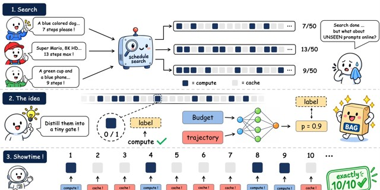

Preprint
BAG: Budget-Aware Gating for Diffusion Caching
Distills offline-searched cache schedules into a gate with under 1K parameters that reads the remaining budget and the realized trajectory at every step, deciding compute-or-reuse on the fly for exact budget adherence.